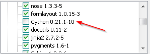
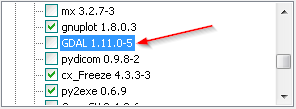
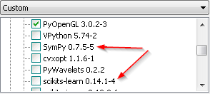
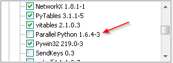
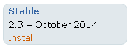
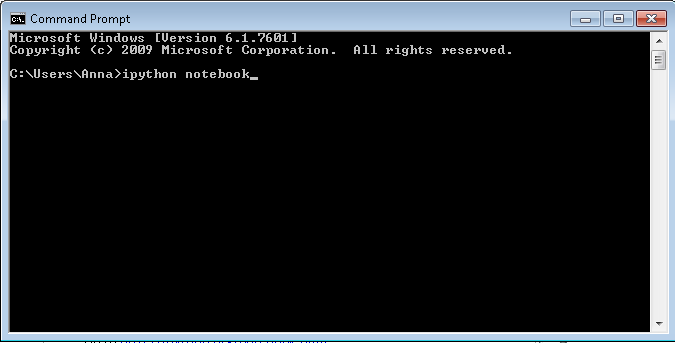
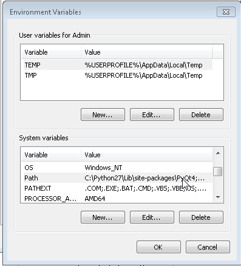
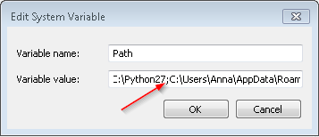
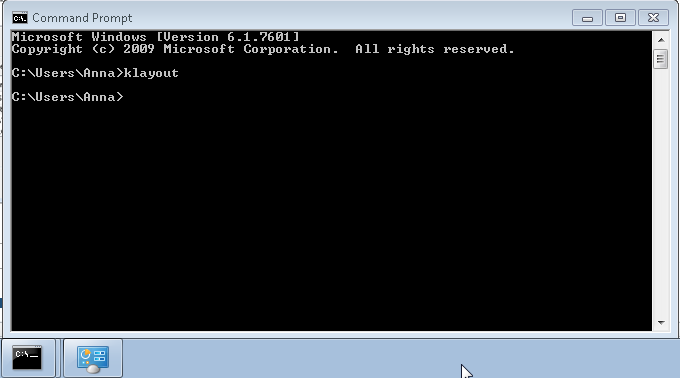

SD docs - Installation
Sonntag, 16. November 2014
13:29
- Get Python
- Get the IPython Notebook
- Install KLayout
- On my computer the path to the klayout application is:
- Then right click on "Computer">choose "Properties">"Advanced system settings">"Environment variables"
- Add the klayout path from step A). Watch out to place the semicolon before the klayout path but no space. Do not add a semicolon behind the path:
- Test by typing klayout in a cmd-command prompt:
- Test the whole Installation (Testing Part II)
Installation on Windows
Core modules and many dependencies are included in Pythonxy (I use 2.7.6.1). Additionally I selected (I am not sure if all of these are necessary for shapely/shapelychipdesigns):
|

|
 |
|

|

|
|
Excellent interace : ) Check out example notebooks at http://nbviewer.ipython.org/
Installation Not needed - comes pre-installed with pythonxy Alternatively: Go to http://ipython.org/notebook.html And click on "install": 
Test the installation Open a cmd window and start the ipython notebook by typing "ipython notebook" into the window: 
https://www.dropbox.com/s/4tlp00g5b5bl9xs/IPythonNotebookCustomcss.cmd?dl=0 ... It will open an IPython Notebook server in the folder where you double click it
Install ShapelyChipDesigns ...
Test the ShapelyChipDesigns Installation (Part I) Open a Notebook Type into a IPy-Notebook: >>> from shapely.geometry import Polygon If this results in error messages relating to some *.dll which wasn't found, reinstall shapely from here: http://www.lfd.uci.edu/~gohlke/pythonlibs/
|
|

KLayout is a free dxf and gds viewer and editor.
The save function of ShapelyChipDesigns is based on KLayout. Install Klayout from here: http://www.klayout.de/
As Klayout will be called in the command line it has to be available in the cmd window.
For this the klayout path needs to be added to the path variable, like this:
|
C:\Users\Anna\AppData\Roaming\KLayout (64bit) You can find it quickly by opening the file location of the application:
|

|
|

|

This should open now the klayout application |
![Machine generated alternative text:
> Qubits Resonators Couplinq Formulas Hardware
Open
-c
t Windows Upd ‘
-XPSViewer
. Accessories
Adobe
Adobe LiveCy ‘
AdobeWebP ‘
Advanced Des
Advanced Des
Alad din
Avira
Cisco
EMPro Sendto
Games
Greenshot Cut
Intel Copy
KaleidaGraph
KLayout (64bit
% KLayout(6
% KLayout(6 Properties
% KLayout (6tu., i,jncuuciy--
Back
4’ Run as administrator
Troubleshoot compatibility
Opejfile location
Edit’Ùu{th Notepad+÷
Scan selected files with Avira
Add to archive...
Add to “klayout.rar”
Compress and email.,.
Compress to klayout.rar” and email
Pin to Taskbar
Pin to Start Menu
Restore previous versions
Delete
Rename
Search programs and flies](SDdocsInstallation_files/mhtE42C1.png)
SPHINX:
Install pandoc >> https://github.com/jgm/pandoc/releases download the msi
$ pip install sphinx_bootstrap_theme
Pasted from <https://pypi.python.org/pypi/sphinx-bootstrap-theme/>